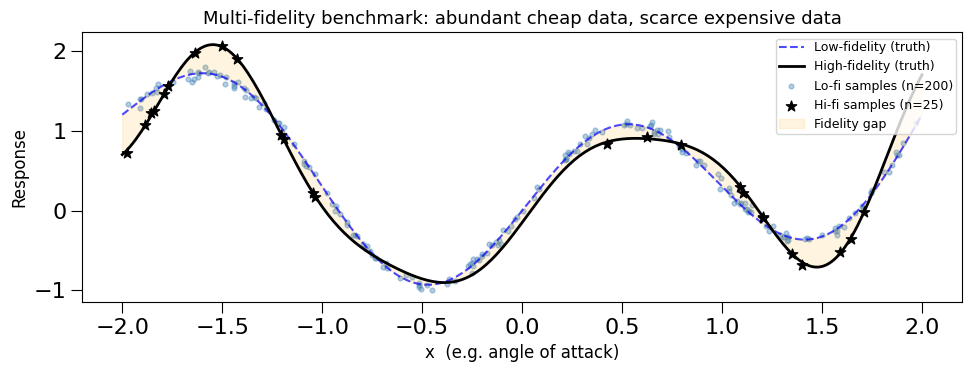
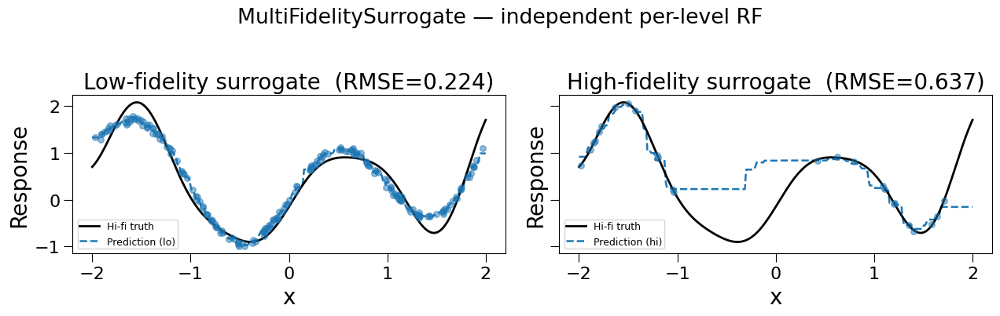
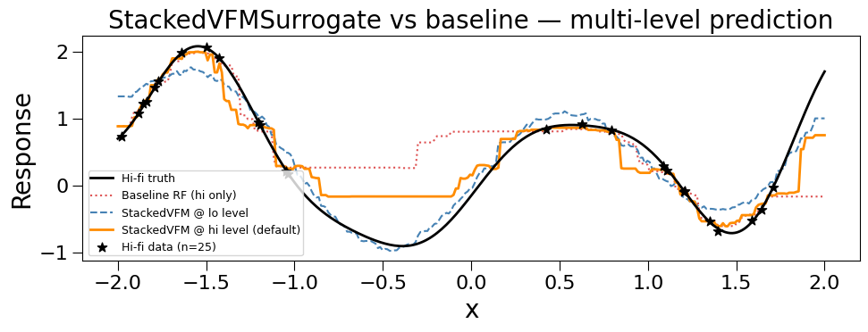
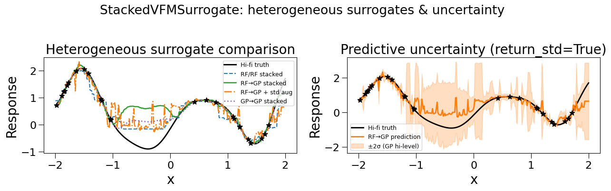
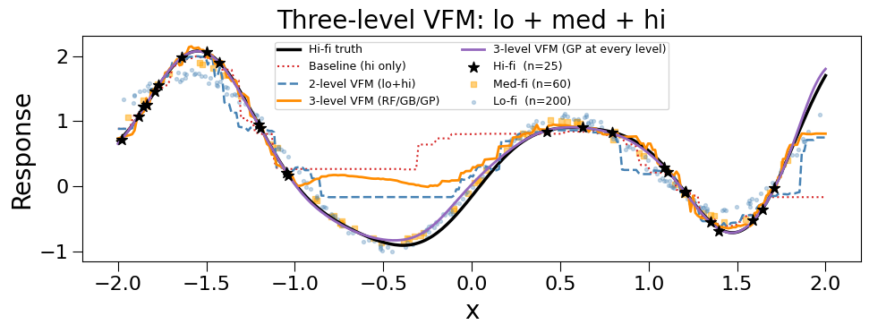
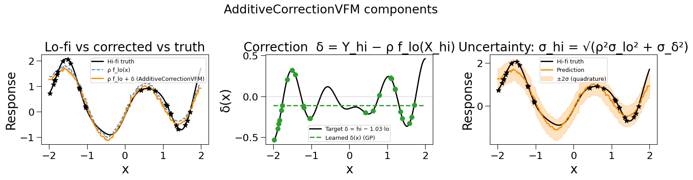
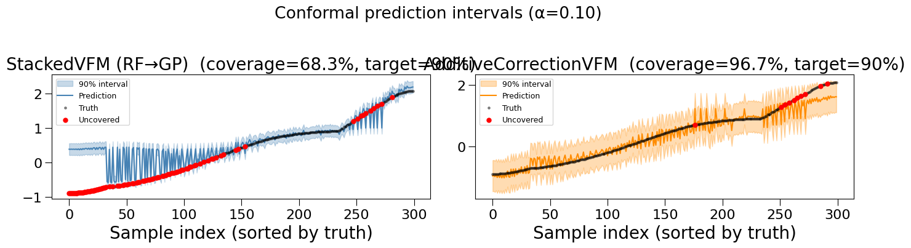
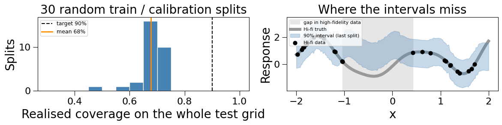
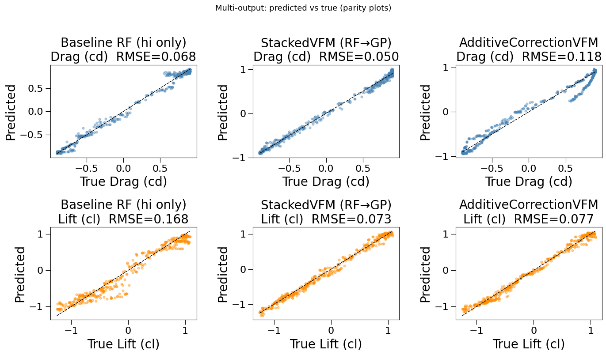
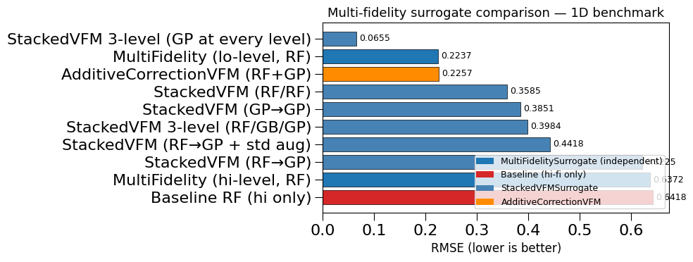

Multi-Fidelity Surrogate Modeling¶
What this tutorial covers:
Many engineering workflows involve simulators or experiments that can be run at different fidelity levels — from fast, inaccurate approximations to slow, high-accuracy runs. Multi-fidelity modeling combines data from all levels to build a surrogate that achieves the accuracy of the expensive high-fidelity source while requiring far fewer expensive evaluations.
multioutreg ships three multi-fidelity classes:
Class |
Approach |
Levels |
Cross-fidelity coupling |
|---|---|---|---|
|
Independent per-level surrogates |
≥ 1 |
None (baseline) |
|
Recursive feature augmentation (Perdikaris et al. 2017) |
≥ 2 |
Full nonlinear |
|
Scaled correction f_hi = ρ f_lo + δ (Kennedy & O’Hagan 2000) |
2 |
Scale + additive |
All three inherit ConformalMixin, so distribution-free prediction intervals via wrap_conformal / conformal_predict are always available.
Contents¶
Motivation & data generation
MultiFidelitySurrogate — independent per-level baseline
StackedVFMSurrogate — nonlinear cross-fidelity coupling
Heterogeneous surrogates and uncertainty augmentation
Three-level VFM
AdditiveCorrectionVFM — Kennedy-O’Hagan style
Conformal prediction intervals
Multi-output example
Model comparison
When to use which class
What the benchmarks show
[1]:
import numpy as np
import matplotlib.pyplot as plt
import matplotlib.gridspec as gridspec
from sklearn.model_selection import train_test_split
import warnings
warnings.filterwarnings('ignore')
from multioutreg.surrogates import (
MultiFidelitySurrogate,
StackedVFMSurrogate,
AdditiveCorrectionVFM,
RandomForestSurrogate,
GaussianProcessSurrogate,
GradientBoostingSurrogate,
LinearRegressionSurrogate,
BayesianRidgeSurrogate,
)
rng = np.random.default_rng(42)
def rmse(y_true, y_pred):
"""Root mean squared error, returns one value per output column."""
return np.sqrt(np.mean((y_true - y_pred) ** 2, axis=0))
## 1. Motivation & Data Generation
We simulate a one-dimensional aerodynamic drag coefficient benchmark where:
Low-fidelity (panel method): fast, 200 cheap evaluations available.
\[c_{d,lo}(x) = \sin(\pi x) + 0.3 x^2\]High-fidelity (RANS CFD): slow, only 25 expensive evaluations available.
\[c_{d,hi}(x) = c_{d,lo}(x) + 0.25\, x \cos(2\pi x) - 0.15 e^{-4x^2}\]
The ground truth is the high-fidelity function; the goal is to learn it accurately using mostly low-fidelity data.
[2]:
def lo_fi(x):
"""Low-fidelity response (fast, inaccurate)."""
return np.sin(np.pi * x) + 0.3 * x**2
def hi_fi(x):
"""High-fidelity response (slow, accurate)."""
return lo_fi(x) + 0.25 * x * np.cos(2 * np.pi * x) - 0.15 * np.exp(-4 * x**2)
# --- Generate data ---
N_LO = 200 # cheap samples
N_HI = 25 # expensive samples
X_lo = rng.uniform(-2, 2, (N_LO, 1))
Y_lo = lo_fi(X_lo) + rng.normal(0, 0.04, (N_LO, 1)) # small observation noise
X_hi = rng.uniform(-2, 2, (N_HI, 1))
Y_hi = hi_fi(X_hi) + rng.normal(0, 0.02, (N_HI, 1)) # tiny observation noise
# Dense test grid for plotting
X_test = np.linspace(-2, 2, 300).reshape(-1, 1)
Y_test = hi_fi(X_test)
print(f"Low-fidelity: {N_LO} samples (cheap)")
print(f"High-fidelity: {N_HI} samples (expensive)")
Low-fidelity: 200 samples (cheap)
High-fidelity: 25 samples (expensive)
[3]:
fig, ax = plt.subplots(figsize=(10, 4))
ax.plot(X_test, lo_fi(X_test), 'b--', lw=1.5, label='Low-fidelity (truth)', alpha=0.7)
ax.plot(X_test, hi_fi(X_test), 'k-', lw=2.0, label='High-fidelity (truth)')
ax.scatter(X_lo, Y_lo, s=12, c='steelblue', alpha=0.4, label=f'Lo-fi samples (n={N_LO})')
ax.scatter(X_hi, Y_hi, s=60, c='k', marker='*', zorder=5, label=f'Hi-fi samples (n={N_HI})')
ax.fill_between(X_test.ravel(),
lo_fi(X_test).ravel(),
hi_fi(X_test).ravel(),
alpha=0.12, color='orange', label='Fidelity gap')
ax.set_xlabel('x (e.g. angle of attack)', fontsize=12)
ax.set_ylabel('Response', fontsize=12)
ax.set_title('Multi-fidelity benchmark: abundant cheap data, scarce expensive data', fontsize=13)
ax.legend(fontsize=9, loc='upper right')
plt.tight_layout()
plt.show()

The orange shaded region is the fidelity gap — the systematic bias that the low-fidelity model introduces. A naive surrogate trained only on the 25 high-fidelity points will overfit; multi-fidelity models use the abundant low-fidelity data to regularise and improve the fit.
## 2. MultiFidelitySurrogate — Independent Per-Level Baseline
MultiFidelitySurrogate is the simplest multi-fidelity class: it fits a completely independent surrogate at each fidelity level. There is no cross-fidelity information transfer — each surrogate sees only its own level’s data.
It is useful as a baseline and for workflows where you simply want to query any level at prediction time with a single object.
MultiFidelitySurrogate(
surrogate_cls, # class used to instantiate a surrogate per level
fidelity_levels, # ordered list of level names
)
Fit via a dict {level: (X, Y)}; predict by specifying a level= keyword.
[4]:
data = {"lo": (X_lo, Y_lo), "hi": (X_hi, Y_hi)}
mfs = MultiFidelitySurrogate(
surrogate_cls=RandomForestSurrogate,
fidelity_levels=["lo", "hi"],
)
mfs.fit(data)
Y_mfs_lo = mfs.predict(X_test, level="lo")
Y_mfs_hi = mfs.predict(X_test, level="hi")
print("MultiFidelity (RF) — independent surrogates")
print(f" Lo-level RMSE vs hi-fi truth: {rmse(Y_test, Y_mfs_lo).item():.4f}")
print(f" Hi-level RMSE vs hi-fi truth: {rmse(Y_test, Y_mfs_hi).item():.4f}")
print()
print("Note: hi-level trained only on 25 points → may overfit or underfit.")
print("Note: lo-level captures lo-fi trend, not the true hi-fi response.")
MultiFidelity (RF) — independent surrogates
Lo-level RMSE vs hi-fi truth: 0.2237
Hi-level RMSE vs hi-fi truth: 0.6372
Note: hi-level trained only on 25 points → may overfit or underfit.
Note: lo-level captures lo-fi trend, not the true hi-fi response.
[5]:
fig, axes = plt.subplots(1, 2, figsize=(13, 4), sharey=True)
for ax, (level, Y_pred, label) in zip(axes, [
("lo", Y_mfs_lo, "Low-fidelity surrogate"),
("hi", Y_mfs_hi, "High-fidelity surrogate"),
]):
ax.plot(X_test, Y_test, 'k-', lw=2, label='Hi-fi truth', zorder=3)
ax.plot(X_test, Y_pred, 'tab:blue', lw=1.8, ls='--', label=f'Prediction ({level})')
ax.scatter(X_lo if level == 'lo' else X_hi,
Y_lo if level == 'lo' else Y_hi,
s=30, c='tab:blue', alpha=0.5, zorder=4)
ax.set_xlabel('x'); ax.set_ylabel('Response')
ax.set_title(f'{label} (RMSE={rmse(Y_test, Y_pred).item():.3f})')
ax.legend(fontsize=9)
plt.suptitle('MultiFidelitySurrogate — independent per-level RF', y=1.02)
plt.tight_layout()
plt.show()

Takeaway: The hi-level surrogate trained on only 25 points is noisy. The lo-level is smooth but biased. Neither exploits the complementary information from the other level.
## 3. StackedVFMSurrogate — Nonlinear Cross-Fidelity Coupling
StackedVFMSurrogate implements the recursive feature-augmentation approach from Perdikaris et al. (2017). At each fidelity level \(k > 0\) the input features are augmented with all lower-level surrogate predictions before fitting:
This allows the high-fidelity surrogate to learn a nonlinear correction over the lower-fidelity predictions.
StackedVFMSurrogate(
fidelity_levels, # ordered list, lowest → highest
surrogate_cls, # one class or list (heterogeneous per level)
surrogate_params, # dict or list of dicts
augment_with_std, # bool — also augment with predicted stds
)
Fit via model.fit({"lo": (X_lo, Y_lo), "hi": (X_hi, Y_hi)}).
[6]:
# Default: Random Forest at every level
stacked = StackedVFMSurrogate(
fidelity_levels=["lo", "hi"],
)
stacked.fit(data)
Y_stacked = stacked.predict(X_test)
# Baseline: RF trained on hi-fi only (no cross-fidelity)
baseline_hi = RandomForestSurrogate()
baseline_hi.fit(X_hi, Y_hi)
Y_baseline = baseline_hi.predict(X_test)
print("Feature count after augmentation:")
for level, n in stacked.augmented_n_features_per_level_.items():
print(f" Level '{level}': {n} features")
print()
print(f"Baseline RF (hi only, n=25) RMSE: {rmse(Y_test, Y_baseline).item():.4f}")
print(f"StackedVFM (RF/RF) RMSE: {rmse(Y_test, Y_stacked).item():.4f}")
Feature count after augmentation:
Level 'lo': 1 features
Level 'hi': 2 features
Baseline RF (hi only, n=25) RMSE: 0.6418
StackedVFM (RF/RF) RMSE: 0.3585
[7]:
# You can also predict at any intermediate fidelity level
Y_at_lo = stacked.predict(X_test, level="lo")
Y_at_hi = stacked.predict(X_test, level="hi") # same as default
fig, ax = plt.subplots(figsize=(10, 4))
ax.plot(X_test, Y_test, 'k-', lw=2, label='Hi-fi truth', zorder=4)
ax.plot(X_test, Y_baseline, 'tab:red', lw=1.5, ls=':', label='Baseline RF (hi only)', alpha=0.8)
ax.plot(X_test, Y_at_lo, 'steelblue', lw=1.5, ls='--', label='StackedVFM @ lo level')
ax.plot(X_test, Y_at_hi, 'darkorange', lw=2, label='StackedVFM @ hi level (default)')
ax.scatter(X_hi, Y_hi, s=60, c='k', marker='*', zorder=5, label=f'Hi-fi data (n={N_HI})')
ax.set_xlabel('x'); ax.set_ylabel('Response')
ax.set_title('StackedVFMSurrogate vs baseline — multi-level prediction')
ax.legend(fontsize=9)
plt.tight_layout()
plt.show()

Key insight: The stacked model’s hi-level prediction inherits the smoothness from the abundant low-fidelity data while correcting the bias using the sparse high-fidelity observations.
## 4. Heterogeneous Surrogates and Uncertainty Augmentation
Pass lists to surrogate_cls and surrogate_params to use a different model at each level. A common pattern is a fast model at the low level and a GP at the top, but the low-level model matters more than it looks: its predictions become an input feature of the level above. A random forest’s piecewise-constant predictions make a jagged feature, which a GP on top then has to fit. Below, the RF → GP stack is compared with a GP at both levels.
Setting augment_with_std=True also passes the predicted standard deviation of level \(k\) as an extra feature for level \(k+1\), allowing the high-fidelity surrogate to downweight regions where the low-fidelity surrogate is uncertain.
[8]:
# RF (lo) → GP (hi)
stacked_rf_gp = StackedVFMSurrogate(
fidelity_levels=["lo", "hi"],
surrogate_cls=[RandomForestSurrogate, GaussianProcessSurrogate],
surrogate_params=[{"n_estimators": 100}, {"alpha": 1e-6}],
)
stacked_rf_gp.fit(data)
Y_rf_gp = stacked_rf_gp.predict(X_test)
# RF (lo) → GP (hi) + std augmentation
stacked_std = StackedVFMSurrogate(
fidelity_levels=["lo", "hi"],
surrogate_cls=[RandomForestSurrogate, GaussianProcessSurrogate],
surrogate_params=[{"n_estimators": 100}, {"alpha": 1e-6}],
augment_with_std=True,
)
stacked_std.fit(data)
Y_std_pred, Y_std_unc = stacked_std.predict(X_test, return_std=True)
# GP at both levels
stacked_gp_gp = StackedVFMSurrogate(
fidelity_levels=["lo", "hi"],
surrogate_cls=GaussianProcessSurrogate,
)
stacked_gp_gp.fit(data)
Y_gp_gp = stacked_gp_gp.predict(X_test)
print("Augmented features with std augmentation:", stacked_std.augmented_n_features_per_level_)
print(" (lo: 1 feature, hi: 1 original + 1 lo-pred + 1 lo-std = 3 features)")
print()
print(f"RF/RF stacked RMSE: {rmse(Y_test, Y_stacked).item():.4f}")
print(f"RF→GP stacked RMSE: {rmse(Y_test, Y_rf_gp).item():.4f}")
print(f"RF→GP + std augment RMSE: {rmse(Y_test, Y_std_pred).item():.4f}")
print(f"GP→GP stacked RMSE: {rmse(Y_test, Y_gp_gp).item():.4f}")
Augmented features with std augmentation: {'lo': 1, 'hi': 3}
(lo: 1 feature, hi: 1 original + 1 lo-pred + 1 lo-std = 3 features)
RF/RF stacked RMSE: 0.3585
RF→GP stacked RMSE: 0.6225
RF→GP + std augment RMSE: 0.4418
GP→GP stacked RMSE: 0.3851
[9]:
fig, axes = plt.subplots(1, 2, figsize=(13, 4))
# Left: predictions
ax = axes[0]
ax.plot(X_test, Y_test, 'k-', lw=2, label='Hi-fi truth')
ax.plot(X_test, Y_stacked, 'tab:blue', lw=1.5, ls='--', label='RF/RF stacked')
ax.plot(X_test, Y_rf_gp, 'tab:green', lw=1.8, label='RF→GP stacked')
ax.plot(X_test, Y_std_pred, 'tab:orange', lw=1.8, ls='-.', label='RF→GP + std aug')
ax.plot(X_test, Y_gp_gp, 'tab:purple', lw=1.8, ls=':', label='GP→GP stacked')
ax.scatter(X_hi, Y_hi, s=60, c='k', marker='*', zorder=5)
ax.set_xlabel('x'); ax.set_ylabel('Response')
ax.set_title('Heterogeneous surrogate comparison')
ax.legend(fontsize=9)
# Right: GP predictive uncertainty from the high-level model
ax = axes[1]
ax.plot(X_test, Y_test, 'k-', lw=2, label='Hi-fi truth')
ax.plot(X_test, Y_std_pred, 'tab:orange', lw=2, label='RF→GP prediction')
ax.fill_between(X_test.ravel(),
(Y_std_pred - 2 * Y_std_unc).ravel(),
(Y_std_pred + 2 * Y_std_unc).ravel(),
alpha=0.25, color='tab:orange', label='±2σ (GP hi-level)')
ax.scatter(X_hi, Y_hi, s=60, c='k', marker='*', zorder=5)
ax.set_xlabel('x'); ax.set_ylabel('Response')
ax.set_title('Predictive uncertainty (return_std=True)')
ax.legend(fontsize=9)
plt.suptitle('StackedVFMSurrogate: heterogeneous surrogates & uncertainty', y=1.02)
plt.tight_layout()
plt.show()

Note on ``return_std=True``: Only the intrinsic std of the highest-level surrogate is returned. Uncertainty accumulated through lower-level predictions is not analytically propagated (this would require Monte Carlo sampling). In practice this makes the stacked model’s intervals too narrow where a lower level is wrong: in the Forrester benchmark only about half of the test points fell inside a 4-level stack’s nominal 95% band. For calibrated intervals use
conformal_predict(Section 7).
## 5. Three-Level VFM
StackedVFMSurrogate generalises naturally to any number of levels. The feature augmentation chain is applied recursively: level 2 sees [X | pred_0 | pred_1], level 3 sees [X | pred_0 | pred_1 | pred_2], and so on.
Here we add a medium-fidelity tier (e.g. RANS with coarser grid) between the cheap panel method and the expensive high-fidelity CFD. The medium level already contains the oscillating term of the high level (at half its amplitude), so the top level only has to learn a small correction. Two configurations are compared: RF / gradient boosting / GP, and a GP at every level.
[10]:
def med_fi(x):
"""Medium-fidelity response — closer to hi-fi than lo-fi, but cheaper."""
return lo_fi(x) + 0.12 * x * np.cos(2 * np.pi * x)
N_MED = 60
X_med = rng.uniform(-2, 2, (N_MED, 1))
Y_med = med_fi(X_med) + rng.normal(0, 0.03, (N_MED, 1))
data_3 = {
"lo": (X_lo, Y_lo),
"med": (X_med, Y_med),
"hi": (X_hi, Y_hi),
}
stacked_3 = StackedVFMSurrogate(
fidelity_levels=["lo", "med", "hi"],
surrogate_cls=[
RandomForestSurrogate, # lo: fast and plentiful
GradientBoostingSurrogate, # med: moderate cost
GaussianProcessSurrogate, # hi: smooth GP correction
],
)
stacked_3.fit(data_3)
Y_3 = stacked_3.predict(X_test)
stacked_3_gp = StackedVFMSurrogate(
fidelity_levels=["lo", "med", "hi"],
surrogate_cls=GaussianProcessSurrogate, # GP at every level
)
stacked_3_gp.fit(data_3)
Y_3_gp = stacked_3_gp.predict(X_test)
print("Sample counts: lo=%d, med=%d, hi=%d" % (N_LO, N_MED, N_HI))
print("Augmented feature sizes:", stacked_3.augmented_n_features_per_level_)
print()
print(f"Baseline RF (hi only) RMSE: {rmse(Y_test, Y_baseline).item():.4f}")
print(f"StackedVFM 2-level (RF/RF) RMSE: {rmse(Y_test, Y_stacked).item():.4f}")
print(f"StackedVFM 3-level RF/GB/GP RMSE: {rmse(Y_test, Y_3).item():.4f}")
print(f"StackedVFM 3-level GP RMSE: {rmse(Y_test, Y_3_gp).item():.4f}")
Sample counts: lo=200, med=60, hi=25
Augmented feature sizes: {'lo': 1, 'med': 2, 'hi': 3}
Baseline RF (hi only) RMSE: 0.6418
StackedVFM 2-level (RF/RF) RMSE: 0.3585
StackedVFM 3-level RF/GB/GP RMSE: 0.3984
StackedVFM 3-level GP RMSE: 0.0655
[11]:
fig, ax = plt.subplots(figsize=(10, 4))
ax.plot(X_test, Y_test, 'k-', lw=2.5, label='Hi-fi truth')
ax.plot(X_test, Y_baseline, 'tab:red', lw=1.5, ls=':', label='Baseline (hi only)')
ax.plot(X_test, Y_stacked, 'steelblue', lw=1.8, ls='--', label='2-level VFM (lo+hi)')
ax.plot(X_test, Y_3, 'darkorange',lw=2, label='3-level VFM (RF/GB/GP)')
ax.plot(X_test, Y_3_gp, 'tab:purple',lw=2, label='3-level VFM (GP at every level)')
ax.scatter(X_hi, Y_hi, s=80, c='k', marker='*', zorder=5, label=f'Hi-fi (n={N_HI})')
ax.scatter(X_med, Y_med, s=20, c='orange', marker='s', alpha=0.5, label=f'Med-fi (n={N_MED})')
ax.scatter(X_lo, Y_lo, s=8, c='steelblue',alpha=0.3, label=f'Lo-fi (n={N_LO})')
ax.set_xlabel('x'); ax.set_ylabel('Response')
ax.set_title('Three-level VFM: lo + med + hi')
ax.legend(fontsize=9, ncol=2)
plt.tight_layout()
plt.show()

## 6. AdditiveCorrectionVFM — Kennedy-O’Hagan Style
AdditiveCorrectionVFM models the high-fidelity response as:
The scale \(\rho\) (one per output) is by default the least-squares slope of \(Y_{hi}\) on \(f_{lo}(X_{hi})\) (rho="fit"); pass a number such as rho=1.0 to fix it. The correction \(\delta(x)\) is a surrogate trained on \(Y_{hi} - \rho f_{lo}(X_{hi})\). Where the high-fidelity inputs are also low-fidelity training points, \(f_{lo}\) is evaluated out of fold (oof_cv=5), so the correction is not fitted to over-accurate in-sample predictions.
Uncertainty is combined in quadrature (assuming independence):
The method predict_components(X) returns (ρ f_lo, δ) separately for diagnostics; the fitted scale is in rho_.
AdditiveCorrectionVFM(
lo_surrogate_cls, # default: RandomForestSurrogate
hi_surrogate_cls, # default: GaussianProcessSurrogate (for delta)
lo_surrogate_params,
hi_surrogate_params,
rho="fit", # or a fixed float, e.g. 1.0
oof_cv=5,
)
Pass data = {"lo": (X_lo, Y_lo), "hi": (X_hi, Y_hi)} to fit().
[12]:
additive = AdditiveCorrectionVFM(
lo_surrogate_cls=RandomForestSurrogate,
hi_surrogate_cls=GaussianProcessSurrogate, # GP is a natural prior for the correction
lo_surrogate_params={"n_estimators": 200},
hi_surrogate_params={"alpha": 1e-6},
)
additive.fit(data)
Y_add, Y_add_std = additive.predict(X_test, return_std=True)
Y_lo_part, Y_delta_part = additive.predict_components(X_test)
print(f"AdditiveCorrectionVFM RMSE: {rmse(Y_test, Y_add).item():.4f}")
print(f"StackedVFM (RF/RF) RMSE: {rmse(Y_test, Y_stacked).item():.4f}")
print()
print(f"Fitted rho_: {additive.rho_[0]:.4f}")
print(f"Mean |rho f_lo(x)|: {np.abs(Y_lo_part).mean():.4f}")
print(f"Mean |delta(x)|: {np.abs(Y_delta_part).mean():.4f} (correction magnitude)")
AdditiveCorrectionVFM RMSE: 0.2257
StackedVFM (RF/RF) RMSE: 0.3585
Fitted rho_: 1.0332
Mean |rho f_lo(x)|: 0.7692
Mean |delta(x)|: 0.1118 (correction magnitude)
[13]:
fig, axes = plt.subplots(1, 3, figsize=(15, 4))
# Panel 1: lo-fi vs corrected vs truth
ax = axes[0]
ax.plot(X_test, Y_test, 'k-', lw=2, label='Hi-fi truth')
ax.plot(X_test, Y_lo_part, 'steelblue', lw=1.5, ls='--', label='ρ f_lo(x)')
ax.plot(X_test, Y_add, 'darkorange',lw=2, label='ρ f_lo + δ (AdditiveCorrectionVFM)')
ax.scatter(X_hi, Y_hi, s=60, c='k', marker='*', zorder=5)
ax.set_xlabel('x'); ax.set_ylabel('Response')
ax.set_title('Lo-fi vs corrected vs truth')
ax.legend(fontsize=9)
# Panel 2: the additive correction delta(x)
ax = axes[1]
rho = additive.rho_[0]
true_delta = hi_fi(X_test) - rho * lo_fi(X_test)
ax.plot(X_test, true_delta, 'k-', lw=2, label=f'Target δ = hi − {rho:.2f}·lo')
ax.plot(X_test, Y_delta_part, 'tab:green', lw=2, ls='--', label='Learned δ(x) (GP)')
ax.axhline(0, c='gray', lw=0.8, ls=':')
ax.scatter(X_hi, hi_fi(X_hi) - rho * lo_fi(X_hi), s=50, c='tab:green', marker='o', zorder=4)
ax.set_xlabel('x'); ax.set_ylabel('δ(x)')
ax.set_title('Correction δ = Y_hi − ρ f_lo(X_hi)')
ax.legend(fontsize=9)
# Panel 3: combined uncertainty
ax = axes[2]
ax.plot(X_test, Y_test, 'k-', lw=2, label='Hi-fi truth')
ax.plot(X_test, Y_add, 'darkorange', lw=2, label='Prediction')
ax.fill_between(X_test.ravel(),
(Y_add - 2 * Y_add_std).ravel(),
(Y_add + 2 * Y_add_std).ravel(),
alpha=0.25, color='darkorange', label='±2σ (quadrature)')
ax.scatter(X_hi, Y_hi, s=60, c='k', marker='*', zorder=5)
ax.set_xlabel('x'); ax.set_ylabel('Response')
ax.set_title('Uncertainty: σ_hi = √(ρ²σ_lo² + σ_δ²)')
ax.legend(fontsize=9)
plt.suptitle('AdditiveCorrectionVFM components', y=1.02)
plt.tight_layout()
plt.show()

When to use ``AdditiveCorrectionVFM``: When the high level is close to a constant multiple of the low level plus a smooth correction, and you want a simple, interpretable decomposition with
predict_components.StackedVFMSurrogatecan capture more complex (input-dependent, regional) gaps.Check the fitted ``rho_``. The least-squares slope is biased when the correction is itself correlated with \(f_{lo}\). Here it is close to 1 and harmless, but on the Forrester benchmark it fitted 0.44 where 2 was right, and
rho=1.0predicted better. Ifrho_looks implausible, compare against a fixedrho.
## 7. Conformal Prediction Intervals
Both StackedVFMSurrogate and AdditiveCorrectionVFM inherit ConformalMixin. The conformal workflow:
Fit the model on training data.
Calibrate on a held-out set:
model.wrap_conformal(X_cal, y_cal).Predict intervals:
y_lo, y_hi = model.conformal_predict(X_test, alpha=0.1).
This produces distribution-free intervals with marginal \((1 - \alpha)\) coverage, regardless of model mis-specification.
Calibration size. Split conformal needs at least \(\lceil (1-\alpha)(n+1) \rceil \le n\) calibration points, i.e. \(n \ge 1/\alpha - 1\). For 90% intervals that is 9 points; with fewer, the interval is infinite. Below, 10 of the 25 high-fidelity points are held out.
[14]:
# Split hi-fi data into train and calibration
idx = rng.permutation(N_HI)
n_cal = 10
X_hi_tr, Y_hi_tr = X_hi[idx[n_cal:]], Y_hi[idx[n_cal:]]
X_hi_cal, Y_hi_cal = X_hi[idx[:n_cal]], Y_hi[idx[:n_cal]]
data_cp = {"lo": (X_lo, Y_lo), "hi": (X_hi_tr, Y_hi_tr)}
# Fit and calibrate StackedVFM
cp_stacked = StackedVFMSurrogate(
fidelity_levels=["lo", "hi"],
surrogate_cls=[RandomForestSurrogate, GaussianProcessSurrogate],
)
cp_stacked.fit(data_cp)
cp_stacked.wrap_conformal(X_hi_cal, Y_hi_cal)
# Conformal intervals at 90% target coverage
Y_lower, Y_upper = cp_stacked.conformal_predict(X_test, alpha=0.1)
Y_cp_pred = cp_stacked.predict(X_test)
coverage = np.mean((Y_test >= Y_lower) & (Y_test <= Y_upper))
mean_width = (Y_upper - Y_lower).mean()
print(f"Target coverage: 90% Achieved: {coverage:.1%}")
print(f"Mean interval width: {mean_width:.4f}")
Target coverage: 90% Achieved: 68.3%
Mean interval width: 0.3413
[15]:
# Also calibrate the additive model
cp_add = AdditiveCorrectionVFM(
lo_surrogate_cls=RandomForestSurrogate,
hi_surrogate_cls=GaussianProcessSurrogate,
hi_surrogate_params={"alpha": 1e-6},
)
cp_add.fit(data_cp)
cp_add.wrap_conformal(X_hi_cal, Y_hi_cal)
Y_lower_add, Y_upper_add = cp_add.conformal_predict(X_test, alpha=0.1)
Y_cp_add_pred = cp_add.predict(X_test)
coverage_add = np.mean((Y_test >= Y_lower_add) & (Y_test <= Y_upper_add))
fig, axes = plt.subplots(1, 2, figsize=(14, 4))
for ax, (pred, lo, hi, title, col, cov) in zip(axes, [
(Y_cp_pred, Y_lower, Y_upper, 'StackedVFM (RF→GP)', 'steelblue', coverage),
(Y_cp_add_pred, Y_lower_add, Y_upper_add, 'AdditiveCorrectionVFM', 'darkorange', coverage_add),
]):
order = np.argsort(Y_test.ravel())
xs = np.arange(len(order))
ax.fill_between(xs, lo[order, 0], hi[order, 0], alpha=0.3, color=col, label='90% interval')
ax.plot(xs, pred[order, 0], lw=1.5, color=col, label='Prediction')
ax.scatter(xs, Y_test[order, 0], s=6, c='k', alpha=0.4, label='Truth', zorder=3)
uncovered = (Y_test[order, 0] < lo[order, 0]) | (Y_test[order, 0] > hi[order, 0])
if uncovered.any():
ax.scatter(xs[uncovered], Y_test[order, 0][uncovered], s=25, c='red', zorder=4, label='Uncovered')
ax.set_title(f'{title} (coverage={cov:.1%}, target=90%)')
ax.set_xlabel('Sample index (sorted by truth)')
ax.legend(fontsize=9, loc='upper left')
plt.suptitle('Conformal prediction intervals (α=0.10)', y=1.02)
plt.tight_layout()
plt.show()

Coverage guarantee: The guarantee is on average over the draw of the calibration set and test point, assuming they are exchangeable with the training data; it does not require a correct model. With only 10 calibration points the coverage of any one calibration set varies a lot, so the single run above can land well away from the target. The cell below repeats the split 30 times.
Exchangeability is the catch. The guarantee holds for test points drawn the same way as the calibration points. Here the calibration points are taken from the 25 high-fidelity points, which happen to leave a large gap in \(x\), while the test grid covers the gap evenly. The intervals are sized by errors near the data and are too narrow in the gap, so coverage on the whole grid falls short of 90% while coverage outside the gap is close to it. A space-filling high-fidelity design (Sobol, LHS) avoids the gap; when predictions are needed far from the data, treat any interval there with suspicion.
[16]:
# Repeat the train / calibration split to see the spread of realised coverage.
# The 25 high-fidelity points leave one large gap in x; coverage is reported
# inside and outside it.
xs = np.sort(X_hi.ravel())
k = np.argmax(np.diff(xs))
gap_lo, gap_hi = xs[k], xs[k + 1]
in_gap = ((X_test > gap_lo) & (X_test < gap_hi)).ravel()
cov_all, cov_in, cov_out = [], [], []
for seed in range(30):
perm = np.random.default_rng(seed).permutation(N_HI)
cal, tr = perm[:n_cal], perm[n_cal:]
m = StackedVFMSurrogate(
fidelity_levels=["lo", "hi"],
surrogate_cls=[RandomForestSurrogate, GaussianProcessSurrogate],
)
m.fit({"lo": (X_lo, Y_lo), "hi": (X_hi[tr], Y_hi[tr])})
m.wrap_conformal(X_hi[cal], Y_hi[cal])
lo_s, hi_s = m.conformal_predict(X_test, alpha=0.1)
inside = ((Y_test >= lo_s) & (Y_test <= hi_s)).ravel()
cov_all.append(inside.mean())
cov_in.append(inside[in_gap].mean())
cov_out.append(inside[~in_gap].mean())
print(f"Largest gap between high-fidelity points: x in ({gap_lo:.2f}, {gap_hi:.2f})")
print(f"Mean coverage over 30 splits, whole grid: {np.mean(cov_all):.1%} (target 90%)")
print(f"Mean coverage outside the gap: {np.mean(cov_out):.1%}")
print(f"Mean coverage inside the gap: {np.mean(cov_in):.1%}")
fig, axes = plt.subplots(1, 2, figsize=(12, 3.2))
ax = axes[0]
ax.hist(cov_all, bins=np.linspace(0.3, 1.0, 15), color="steelblue", edgecolor="white")
ax.axvline(0.9, color="k", ls="--", label="target 90%")
ax.axvline(np.mean(cov_all), color="darkorange", lw=2, label=f"mean {np.mean(cov_all):.0%}")
ax.set_xlabel("Realised coverage on the whole test grid")
ax.set_ylabel("Splits")
ax.set_title("30 random train / calibration splits")
ax.legend(fontsize=9)
ax = axes[1]
ax.axvspan(gap_lo, gap_hi, color="0.9", label="gap in high-fidelity data")
ax.plot(X_test, Y_test, color="0.6", lw=5, zorder=1, label="Hi-fi truth")
ax.fill_between(X_test.ravel(), lo_s.ravel(), hi_s.ravel(), color="steelblue", alpha=0.3, label="90% interval (last split)")
ax.scatter(X_hi, Y_hi, s=40, c="k", zorder=4, label="Hi-fi data")
ax.set_xlabel("x"); ax.set_ylabel("Response")
ax.set_title("Where the intervals miss")
ax.legend(fontsize=8, loc="upper left")
plt.tight_layout()
plt.show()
Largest gap between high-fidelity points: x in (-1.04, 0.42)
Mean coverage over 30 splits, whole grid: 67.7% (target 90%)
Mean coverage outside the gap: 92.4%
Mean coverage inside the gap: 24.5%

## 8. Multi-Output Example
All three classes natively handle multi-output responses. Pass Y arrays with shape (n_samples, n_outputs) — both fidelity levels must share the same output dimensionality for AdditiveCorrectionVFM, while StackedVFMSurrogate can handle mismatched dimensions via the output_dim_mismatch parameter.
[17]:
# Multi-output: drag coefficient AND lift coefficient
def lo_fi_mo(X):
x1, x2 = X[:, 0], X[:, 1]
cd = np.sin(np.pi * x1) + 0.3 * x1**2 # drag
cl = np.cos(np.pi * x2) + 0.2 * x1 * x2 # lift
return np.column_stack([cd, cl])
def hi_fi_mo(X):
Y_lo = lo_fi_mo(X)
x1, x2 = X[:, 0], X[:, 1]
delta_cd = 0.25 * x1 * np.cos(2 * np.pi * x1) - 0.15 * np.exp(-4 * x1**2)
delta_cl = 0.15 * np.sin(3 * np.pi * x2) * x1
return Y_lo + np.column_stack([delta_cd, delta_cl])
X_lo_mo = rng.uniform(-1, 1, (150, 2))
Y_lo_mo = lo_fi_mo(X_lo_mo) + rng.normal(0, 0.04, (150, 2))
X_hi_mo = rng.uniform(-1, 1, (30, 2))
Y_hi_mo = hi_fi_mo(X_hi_mo) + rng.normal(0, 0.02, (30, 2))
X_test_mo = rng.uniform(-1, 1, (400, 2))
Y_test_mo = hi_fi_mo(X_test_mo)
print(f"Multi-output problem: {Y_hi_mo.shape[1]} outputs (drag, lift)")
print(f"Lo-fi: {X_lo_mo.shape}, Hi-fi: {X_hi_mo.shape}")
Multi-output problem: 2 outputs (drag, lift)
Lo-fi: (150, 2), Hi-fi: (30, 2)
[18]:
data_mo = {"lo": (X_lo_mo, Y_lo_mo), "hi": (X_hi_mo, Y_hi_mo)}
# StackedVFM with RF at both levels
stacked_mo = StackedVFMSurrogate(
fidelity_levels=["lo", "hi"],
surrogate_cls=[RandomForestSurrogate, GaussianProcessSurrogate],
surrogate_params=[{}, {"alpha": 1e-4}],
)
stacked_mo.fit(data_mo)
Y_stacked_mo = stacked_mo.predict(X_test_mo)
# AdditiveCorrectionVFM
additive_mo = AdditiveCorrectionVFM(
lo_surrogate_cls=RandomForestSurrogate,
hi_surrogate_cls=GaussianProcessSurrogate,
hi_surrogate_params={"alpha": 1e-4},
)
additive_mo.fit(data_mo)
Y_add_mo = additive_mo.predict(X_test_mo)
# Baseline: RF on hi only
baseline_mo = RandomForestSurrogate()
baseline_mo.fit(X_hi_mo, Y_hi_mo)
Y_base_mo = baseline_mo.predict(X_test_mo)
output_names = ["Drag (cd)", "Lift (cl)"]
print(f"{'Model':<35} {'RMSE cd':>10} {'RMSE cl':>10}")
print("-" * 57)
for label, preds in [
("Baseline RF (hi only)", Y_base_mo),
("StackedVFM (RF→GP)", Y_stacked_mo),
("AdditiveCorrectionVFM (RF+GP)", Y_add_mo),
]:
r = rmse(Y_test_mo, preds)
print(f"{label:<35} {r[0]:>10.4f} {r[1]:>10.4f}")
Model RMSE cd RMSE cl
---------------------------------------------------------
Baseline RF (hi only) 0.0677 0.1677
StackedVFM (RF→GP) 0.0497 0.0727
AdditiveCorrectionVFM (RF+GP) 0.1185 0.0775
[19]:
fig, axes = plt.subplots(2, 3, figsize=(14, 8))
models = [
("Baseline RF (hi only)", Y_base_mo),
("StackedVFM (RF→GP)", Y_stacked_mo),
("AdditiveCorrectionVFM", Y_add_mo),
]
for row, out_idx in enumerate([0, 1]):
for col, (model_name, Y_pred) in enumerate(models):
ax = axes[row, col]
r = rmse(Y_test_mo, Y_pred)[out_idx]
ax.scatter(Y_test_mo[:, out_idx], Y_pred[:, out_idx],
s=12, alpha=0.4, c='steelblue' if row == 0 else 'darkorange')
lims = [Y_test_mo[:, out_idx].min(), Y_test_mo[:, out_idx].max()]
ax.plot(lims, lims, 'k--', lw=1)
ax.set_xlabel(f'True {output_names[out_idx]}')
ax.set_ylabel(f'Predicted')
ax.set_title(f'{model_name}\n{output_names[out_idx]} RMSE={r:.3f}')
plt.suptitle('Multi-output: predicted vs true (parity plots)', y=1.01, fontsize=13)
plt.tight_layout()
plt.show()

## 9. Model Comparison
Summary of all models evaluated in this tutorial on the 1D benchmark.
[20]:
import pandas as pd
results_1d = [
("MultiFidelity (lo-level, RF)", rmse(Y_test, Y_mfs_lo).item()),
("MultiFidelity (hi-level, RF)", rmse(Y_test, Y_mfs_hi).item()),
("Baseline RF (hi only)", rmse(Y_test, Y_baseline).item()),
("StackedVFM (RF/RF)", rmse(Y_test, Y_stacked).item()),
("StackedVFM (RF→GP)", rmse(Y_test, Y_rf_gp).item()),
("StackedVFM (RF→GP + std aug)", rmse(Y_test, Y_std_pred).item()),
("StackedVFM (GP→GP)", rmse(Y_test, Y_gp_gp).item()),
("StackedVFM 3-level (GP at every level)", rmse(Y_test, Y_3_gp).item()),
("StackedVFM 3-level (RF/GB/GP)", rmse(Y_test, Y_3).item()),
("AdditiveCorrectionVFM (RF+GP)", rmse(Y_test, Y_add).item()),
]
df = pd.DataFrame(results_1d, columns=["Model", "RMSE"])
df = df.sort_values("RMSE").reset_index(drop=True)
df["RMSE"] = df["RMSE"].round(4)
df
[20]:
| Model | RMSE | |
|---|---|---|
| 0 | StackedVFM 3-level (GP at every level) | 0.0655 |
| 1 | MultiFidelity (lo-level, RF) | 0.2237 |
| 2 | AdditiveCorrectionVFM (RF+GP) | 0.2257 |
| 3 | StackedVFM (RF/RF) | 0.3585 |
| 4 | StackedVFM (GP→GP) | 0.3851 |
| 5 | StackedVFM 3-level (RF/GB/GP) | 0.3984 |
| 6 | StackedVFM (RF→GP + std aug) | 0.4418 |
| 7 | StackedVFM (RF→GP) | 0.6225 |
| 8 | MultiFidelity (hi-level, RF) | 0.6372 |
| 9 | Baseline RF (hi only) | 0.6418 |
[21]:
fig, ax = plt.subplots(figsize=(10, 4))
colors = ['tab:blue' if 'Multi' in m else
'tab:red' if 'Baseline' in m else
'darkorange' if 'Additive' in m else
'steelblue'
for m in df["Model"]]
bars = ax.barh(df["Model"], df["RMSE"], color=colors, edgecolor='k', lw=0.5)
ax.bar_label(bars, fmt='%.4f', padding=3, fontsize=9)
ax.set_xlabel('RMSE (lower is better)', fontsize=12)
ax.set_title('Multi-fidelity surrogate comparison — 1D benchmark', fontsize=13)
ax.invert_yaxis()
from matplotlib.patches import Patch
legend_elements = [
Patch(facecolor='tab:blue', label='MultiFidelitySurrogate (independent)'),
Patch(facecolor='tab:red', label='Baseline (hi-fi only)'),
Patch(facecolor='steelblue', label='StackedVFMSurrogate'),
Patch(facecolor='darkorange', label='AdditiveCorrectionVFM'),
]
ax.legend(handles=legend_elements, fontsize=9, loc='lower right')
plt.tight_layout()
plt.show()

## 10. When to Use Which Class
Situation |
Recommended class |
|---|---|
You want to query any level independently, with no cross-fidelity learning |
|
The fidelity gap is nonlinear or involves regional differences |
|
You have 3 or more fidelity levels |
|
Different regions need different surrogate families |
|
The high level is roughly a constant multiple of the low level plus a smooth shift |
|
You want a simple diagnostic decomposition |
|
You need calibrated prediction intervals |
Any class — call |
High-fidelity data is very scarce (< 10 points) |
|
Inputs are low-dimensional and the response is smooth |
A GP at every level, rather than random forests at the lower levels |
Output space is multi-output |
All three classes handle this natively |
Parameter cheat-sheet¶
# MultiFidelitySurrogate
MultiFidelitySurrogate(surrogate_cls=RandomForestSurrogate, fidelity_levels=["lo", "hi"])
model.fit({"lo": (X_lo, Y_lo), "hi": (X_hi, Y_hi)})
model.predict(X_test, level="hi") # specify which level
# StackedVFMSurrogate
StackedVFMSurrogate(
fidelity_levels=["lo", "med", "hi"], # ordered lowest → highest
surrogate_cls=[RF, GB, GP], # one class or a list
surrogate_params=[{}, {}, {"alpha": 1e-6}],
augment_with_std=True, # pass predicted stds as features
)
model.fit({"lo": (X_lo, Y_lo), "med": (X_med, Y_med), "hi": (X_hi, Y_hi)})
model.predict(X_test) # defaults to highest level
model.predict(X_test, level="med") # or specify intermediate level
model.predict(X_test, return_std=True) # std from hi-level surrogate
# AdditiveCorrectionVFM
AdditiveCorrectionVFM(
lo_surrogate_cls=RandomForestSurrogate,
hi_surrogate_cls=GaussianProcessSurrogate, # models the correction delta
rho="fit", # or a fixed float
)
model.fit({"lo": (X_lo, Y_lo), "hi": (X_hi, Y_hi)})
y_pred, y_std = model.predict(X_test, return_std=True) # quadrature uncertainty
rho_f_lo, delta = model.predict_components(X_test) # rho * f_lo and delta
# Conformal intervals (any multi-fidelity class)
model.fit(data_train)
model.wrap_conformal(X_cal, y_cal) # calibrate on held-out hi-fi points
y_lower, y_upper = model.conformal_predict(X_test, alpha=0.1) # 90% coverage
## 11. What the Benchmarks Show
This tutorial’s data is a single made-up problem. The multi-fidelity benchmark notebook repeats the comparison on the 4-level Forrester problem of Mainini et al. (2022), with the true function known everywhere and the high-fidelity budget swept from 4 to 25 points over 10 seeds. Its findings:
Stacking with a GP at every level was the most accurate from about 6 high-fidelity points on, far ahead of a single-fidelity GP on the same points. The 4-level stack helped most at the smallest budgets.
Random forests at the lower levels levelled off at a much higher error than GPs at the lower levels on that smooth one-dimensional problem.
The fitted ``rho`` of ``AdditiveCorrectionVFM`` was biased (0.44 where 2 makes the correction linear), and
rho=1.0beat it up to 18 high-fidelity points.The stacked model’s ``return_std`` was too narrow: about half of the test points fell inside a nominal 95% band. Use conformal intervals when coverage matters.
With enough high-fidelity points (about 18–25) a single-fidelity GP caught up, and the extra levels stopped paying off.
These are results on one benchmark; check them on your own data with cross-validation before relying on them.
[22]:
# Quick sanity check: all key APIs work end-to-end
print("=== API smoke test ===")
# MultiFidelitySurrogate
m = MultiFidelitySurrogate(RandomForestSurrogate, ["lo", "hi"])
m.fit(data)
assert m.predict(X_test[:5], level="hi").shape == (5, 1)
print("MultiFidelitySurrogate OK")
# StackedVFMSurrogate
s = StackedVFMSurrogate(fidelity_levels=["lo", "hi"])
s.fit(data)
y, std = s.predict(X_test[:5], return_std=True)
assert y.shape == (5, 1)
s.wrap_conformal(X_hi[:5], Y_hi[:5])
lo_cp, hi_cp = s.conformal_predict(X_test[:5], alpha=0.1)
assert (hi_cp >= lo_cp).all()
print("StackedVFMSurrogate OK")
# AdditiveCorrectionVFM
a = AdditiveCorrectionVFM()
a.fit(data)
y_add, std_add = a.predict(X_test[:5], return_std=True)
f_lo, delta = a.predict_components(X_test[:5])
assert np.allclose(y_add, f_lo + delta)
a.wrap_conformal(X_hi[:5], Y_hi[:5])
lo_cp2, hi_cp2 = a.conformal_predict(X_test[:5], alpha=0.1)
assert (hi_cp2 >= lo_cp2).all()
print("AdditiveCorrectionVFM OK")
print("\nAll assertions passed.")
=== API smoke test ===
MultiFidelitySurrogate OK
StackedVFMSurrogate OK
AdditiveCorrectionVFM OK
All assertions passed.
References¶
Perdikaris, P., Raissi, M., Damianou, A., Lawrence, N. D., & Karniadakis, G. E. (2017). Nonlinear information fusion algorithms for data-efficient multi-fidelity modelling. Proceedings of the Royal Society A, 473(2198).
Kennedy, M. C., & O’Hagan, A. (2000). Predicting the output from a complex computer code when fast approximations are available. Biometrika, 87(1), 1–13.
Angelopoulos, A. N., & Bates, S. (2021). A gentle introduction to conformal prediction and distribution-free uncertainty quantification. arXiv:2107.07511.